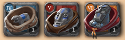
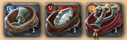
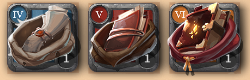
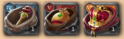
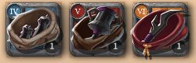
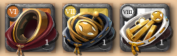

奢侈品
奢侈品的獲取與出售。
掉落
大多數的怪物和寶箱都會掉T4~T6的六大城奢侈品。陣營寶箱只會開出T6的六大城奢侈品。
T6~T8的全城奢侈品我忘記獲取途徑了。
出售
奢侈品收購地的市場，系統會掛單，無限量收購。| 物品圖示 | 奢侈品收購地 | 賣出價(4%稅) | 賣出價(8%稅) | ||||||||||||
|  | Fort Sterling (白城) |
|
|
||||||||||||
|  | Lymhurst (綠城) | ||||||||||||||
 |
Bridgewatch (黃城) | ||||||||||||||
|  | Martlock (藍城) | ||||||||||||||
|  | Thetford (紫城) | ||||||||||||||
|  | Caerleon (紅城) | ||||||||||||||
|  | 皇家大陸6座主城皆有收購 |
|
|
如果某個市場(例：藍城)系統不收某種奢侈品(例：紅城奢侈品)，
那麼該奢侈品的買入價格有可能會比上表價格低，運奢侈品賺取差價是最基礎的跑商。
純運奢侈品不怎麼賺，但如果你剛好順路且負重沒滿，可以考慮運一些。
編輯紀錄
作者: runnywolf
最後編輯日期: 2023/3/7